我在北京学习应用经济学，也把经济学训练带进产品与用户问题。对我来说，理性不是减少感受，而是让我更清楚地知道，什么值得认真。
生活里，我在球场练习下一拍，在泳池里找回节奏，在取景器里收藏光线，也愿意为朋友做一桌饭。比起把自己装进一种标签，我更喜欢持续体验，再慢慢成为自己。
产品思维好奇心共情力行动派
影像记录运动习惯热爱生活体验主义
BEIJING · 23 · ENFJ-T
在北京读应用经济学，也在真实的产品问题里寻找答案。场下做产品，场上练下一拍；用镜头保存风景，也认真对待每一顿饭和每一次出发。
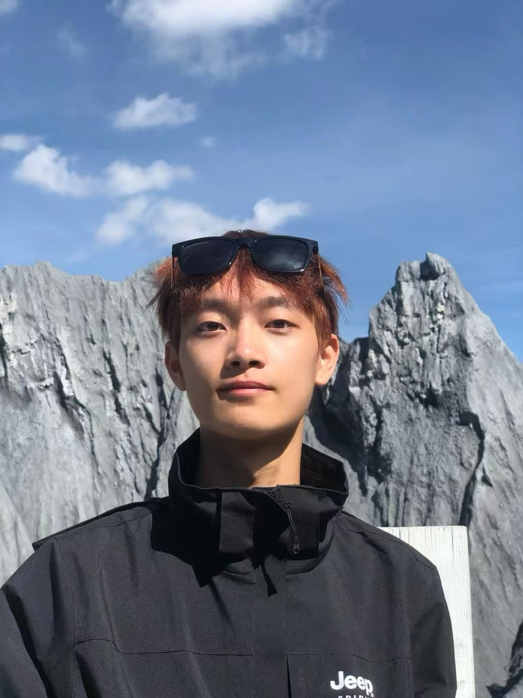
01 / ABOUT ME
ABOUT & NOW
关于我，以及此刻
我在北京学习应用经济学，也把经济学训练带进产品与用户问题。对我来说，理性不是减少感受，而是让我更清楚地知道，什么值得认真。
生活里，我在球场练习下一拍，在泳池里找回节奏，在取景器里收藏光线，也愿意为朋友做一桌饭。比起把自己装进一种标签，我更喜欢持续体验，再慢慢成为自己。
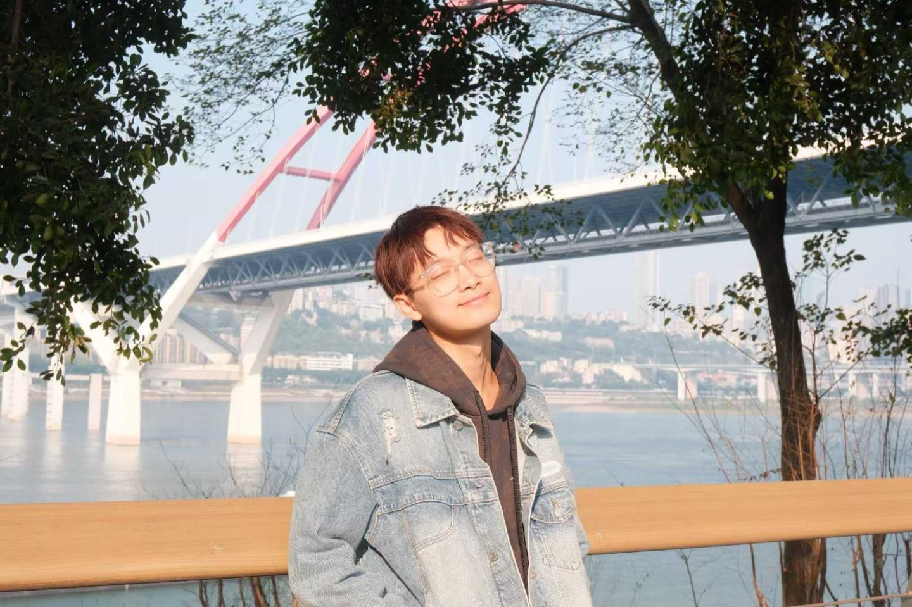
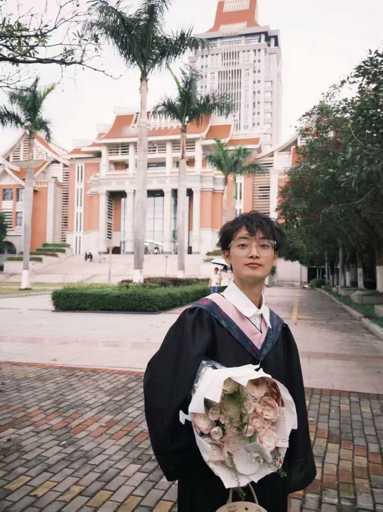
应用经济学硕士在读，继续理解商业、数据和人。
关心用户体验，也关心方案是否真正落地。
球龄一年，右手 2.0，还在把每一拍打得更稳。
02 / MANY SIDES
运动、影像、声音、辩论、食物与小动物，构成工作之外更完整的我。
A动起来IN MOTION · 运动与舞台
RIGHT-HANDED · LEVEL 2.0
球龄一年，右手持拍。在一次次挥拍里听见球与风的回响，也看着自己一点点变稳。
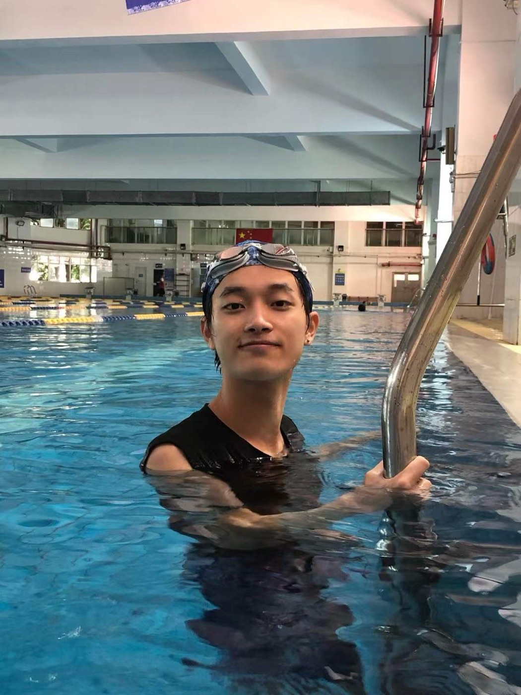
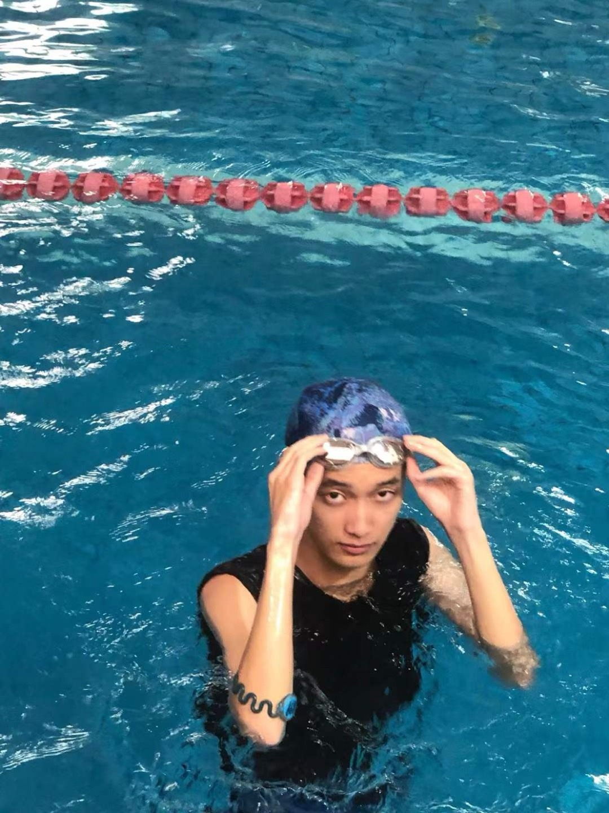
SWIMMING / BREASTSTROKE
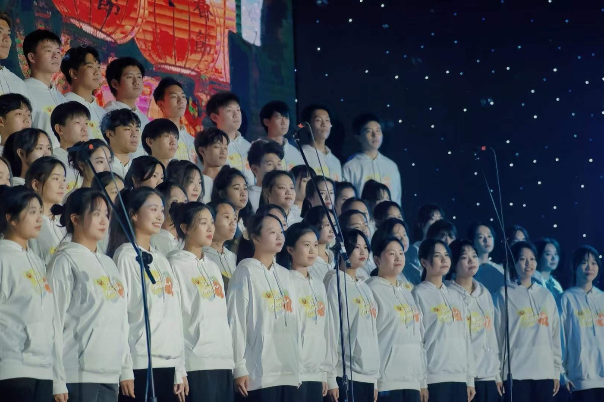


DEBATE / JMU
本科时站上辩论赛场。在一次次立论与反驳里，我学会把复杂的问题拆开，也学会在分歧之间，安静地听见另一种声音。

BEFORE ALL OF THIS
那时还坐不太稳，却已经会冲着镜头笑。后来学会了很多事，这份好奇和笑，一直带在身上。
B慢下来EVERYDAY · 城市与日常
喜欢倾听，也喜欢把人连在一起；同时也在学着，给自己留一段安静的时间。

MY FAVORITE CITY
走过许多城市，最想回去的还是这里。黄昏里的双子塔，环岛路上的海风，不急不慢，刚好是我喜欢的节奏。

NEXT TRIP
坡道一层叠着一层，江面的灯火亮到深夜。总觉得那里还有没走完的路，想再去一次。
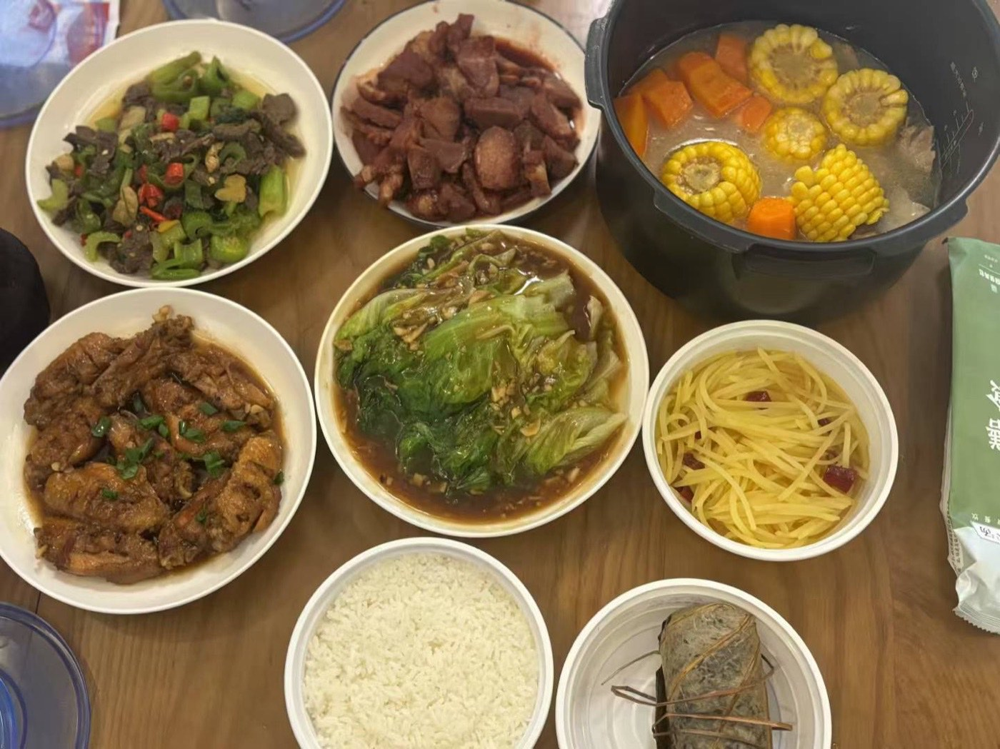

03 / THROUGH MY LENS
MY CAMERA
SIGMA 18–50mm
往右滑，看它拍下的04 / OOTD & JOURNEY
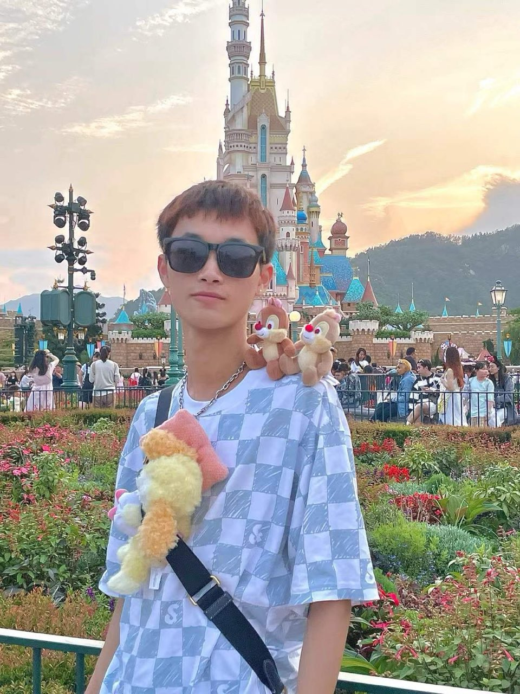
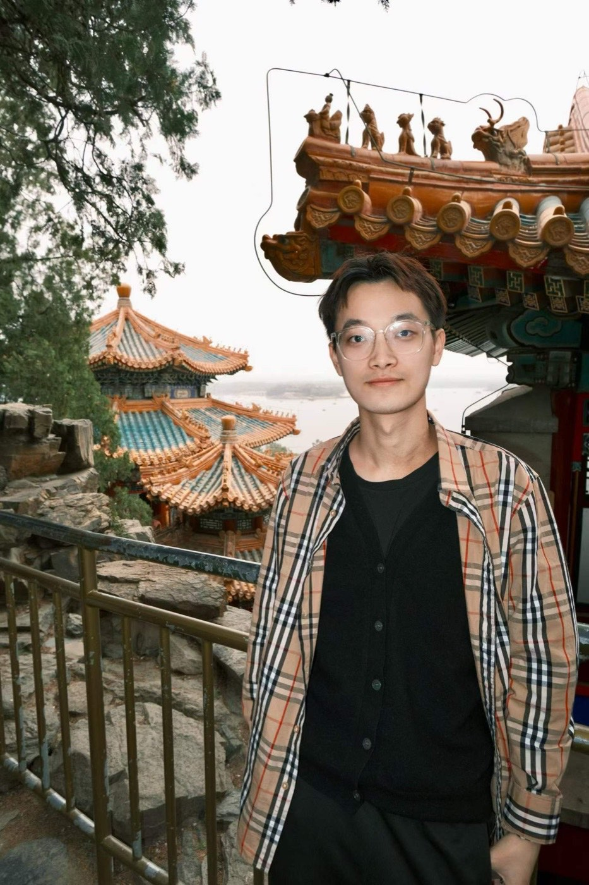
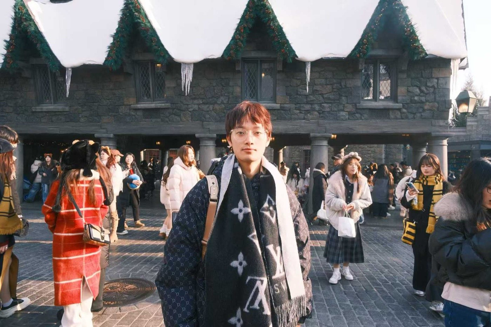
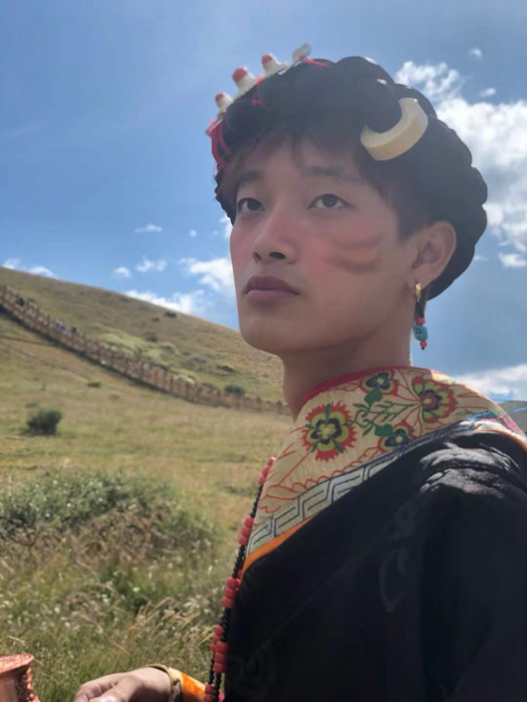
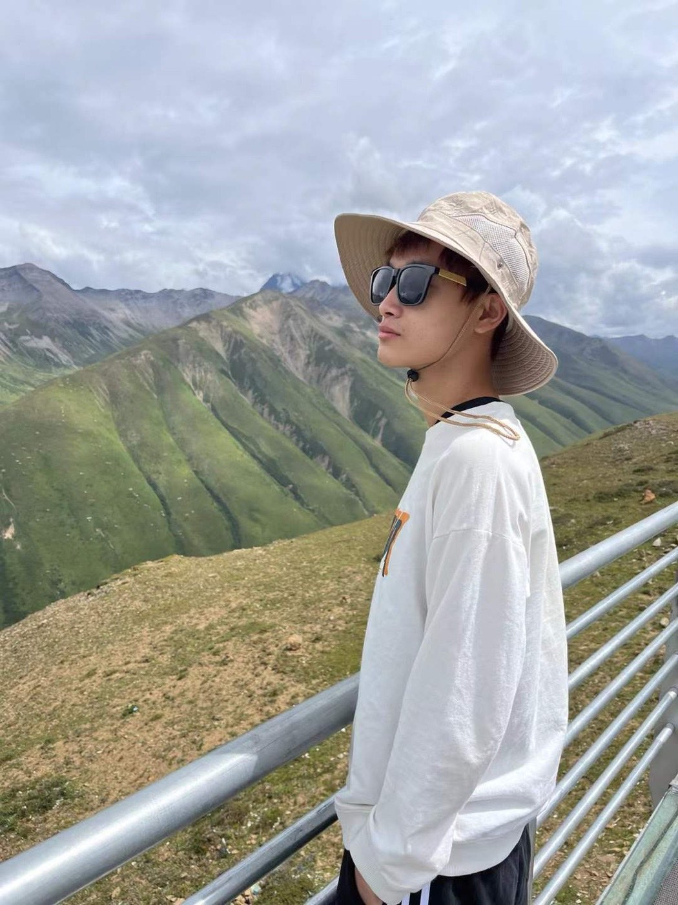
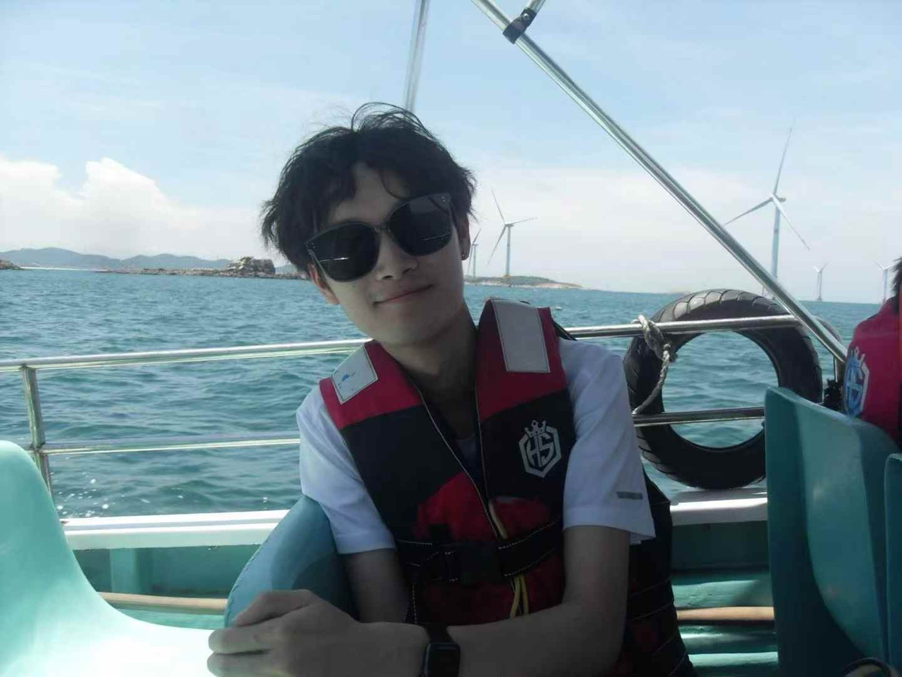
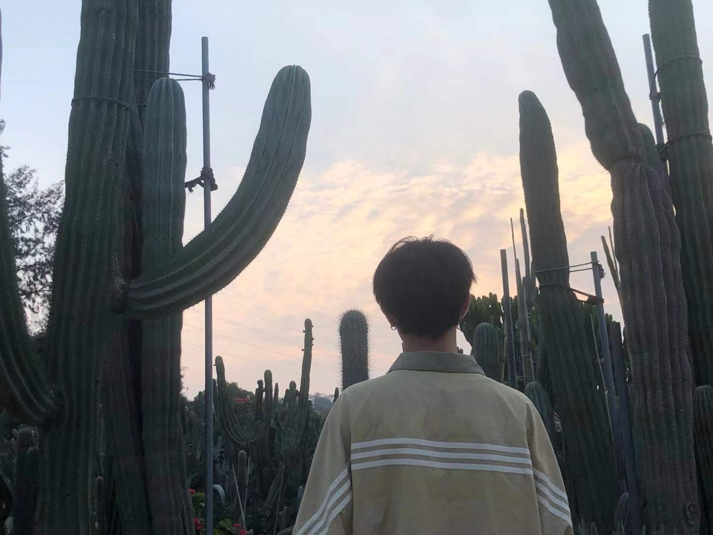
05 / EXPERIENCE
经济学训练让我关注激励与选择，产品实践让我始终回到用户、数据和落地。
参与智能硬件增值服务的售后体验优化，以及付费活动产品迭代。
参与暑期大促从 0 到 1 搭建，覆盖活动产品、投放和用户运营。
负责国际技能赛事的高校宣传，并参与活动 App 页面优化。
项目负责人。围绕 VR 试穿、无人机体验与智能互动设备，完成场景、商业模型和 12 个月落地扩张规划。
走访商圈与文旅场馆，完成市场现状、消费人群与可行模式分析。
先后参与集美大学学生会与北京交通大学研究生会，负责赛事、校园歌手大赛与大型活动执行。
ABILITY RADAR
根据实习、项目与校园经历做的自我评估，满分 100。
TOOLS & SKILLS
城市照片：洪崖洞 © Jonashtand, CC BY-SA 4.0 · 双子塔 © 周流劲火, CC BY 2.5